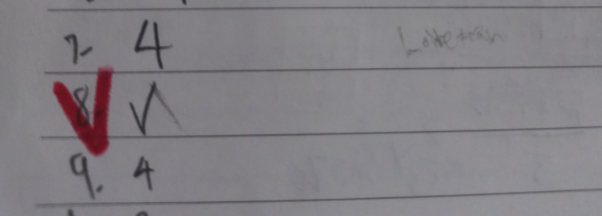

Notes
- Summary — Yunje attempted 9 of 10 problems and got every one correct — big-integer counting (Q3, Q4), radical manipulation (Q5, Q7), casework (Q6, Q9), and left only the harder geometry problem (Q8) blank. Strong accuracy on everything attempted.
- Reread requested — Q2 (\(\tfrac{8}{17}\)) and Q5 (\(6156\)) were hard to read from the handwriting. Reconstructed by matching against the official answer, but worth double-checking the original scan with the student.
- Q8 — Left blank (only a check mark, no value). The answer is \(\tfrac{37}{7}\) — combines a 120° rotation argument with Ptolemy's theorem. Worth covering together next session.
Q1 ✓ Correct Number theory · factors
Official\(26\)
Yunje\(26\)
Problem
What is the largest factor of \(130000\) that does not contain the digit \(0\) or \(5\)?
Solution
- \(130000=2^4\cdot5^4\cdot13\). Any factor containing a \(5\) ends in \(0\) or \(5\), so it must be a factor of \(2^4\cdot13=208\).
- If it uses the factor \(13\), cancel powers of \(2\) from \(208\to104\to52\to26\) — all still contain a \(0\), until \(26\).
- Without the factor \(13\), the largest option is \(2^4=16\), smaller than \(26\).
- \(\therefore 26.\)
Q2 ✓ Correct Probability · random partition
Official\(\tfrac{8}{17}\)
Yunje\(\tfrac{8}{17}\)
Problem
Twenty-seven players are randomly split into three teams of nine. Given that Zack is on a different team from Mihir and Mihir is on a different team from Andrew, what is the probability that Zack and Andrew are on the same team?
Solution
- Zack and Mihir are already on different teams. Andrew (known to differ from Mihir's team) can land in Zack's team or the third team.
- Zack's team has \(8\) open spots, the third team has \(9\) — Andrew is equally likely to take any of the \(17\) remaining spots outside Mihir's team.
- \(\therefore P(\text{Zack, Andrew same team})=\dfrac{8}{17}.\)
Q3 ✓ Correct Geometry · square on given x-coordinates
Official\(1168\)
Yunje\(1168\)
Problem
A square in the \(xy\)-plane has area \(A\), and three of its vertices have \(x\)-coordinates \(2,0,\) and \(18\) in some order. Find the sum of all possible values of \(A\).
Solution
- If three vertices lie on \(y=y_1,y_2,y_3\) with the \(y_1\)-vertex adjacent to the other two, the side length squared is \((y_2-y_1)^2+(y_3-y_1)^2\) by the Pythagorean theorem.
- With \((y_1,y_2,y_3)=(2,0,18)\) taken in each role: \(2^2+16^2,\ 2^2+18^2,\ 16^2+18^2\).
- Sum \(=2(2^2+16^2+18^2)=2(4+256+324)=1168.\)
Q4 ✓ Correct Number theory · digit counting
Official\(181440\)
Yunje\(181440\)
Problem
Find the number of eight-digit positive integers that are multiples of \(9\) and have all distinct digits.
Solution
- \(0+1+\cdots+9=45\); an 8-digit number using distinct digits from \(0\!-\!9\) omits exactly two digits, which must sum to \(9\) for divisibility by \(9\).
- If the omitted pair is \(\{0,9\}\): the remaining \(8\) digits (all nonzero) give \(8\cdot7!\) arrangements (fixing the leading-digit choice).
- For each of the other \(4\) omitted pairs (neither is \(0\)): \(0\) is among the remaining digits, so the leading digit can't be \(0\) → \(7\cdot7!\) arrangements each.
- Total \(=8\cdot7!+4\cdot7\cdot7!=36\cdot7!=181440.\)
Q5 ✓ Correct Algebra · nested radicals
Official\(6156\)
Yunje\(6156\)
Problem
Compute the smallest positive integer \(n\) for which \(\sqrt{100+\sqrt n}+\sqrt{100-\sqrt n}\) is an integer.
Solution
- Squaring \(\sqrt{100+\sqrt n}+\sqrt{100-\sqrt n}\) gives \(200+2\sqrt{10000-n}\); this is a perfect square iff \(\sqrt{10000-n}\) is an integer.
- To minimize \(n\), maximize \(200+2\sqrt{10000-n}\) subject to it being a perfect square less than \(400=20^2\) — the largest option is \(18^2=324\).
- Solve \(200+2\sqrt{10000-n}=324\Rightarrow\sqrt{10000-n}=62\Rightarrow n=10000-3844=6156.\)
Q6 ✓ Correct Geometry · casework, cyclic polygons
Official\(14\)
Yunje\(14\)
Problem
Call a polygon normal if it can be inscribed in a unit circle. How many non-congruent normal polygons are there such that the square of each side length is a positive integer?
Solution
- Side lengths of a polygon inscribed in a unit circle with integer squared length come from \(\{1,\sqrt2,\sqrt3,2\}\), subtending \(60^\circ,90^\circ,120^\circ,180^\circ\).
- Working mod \(60^\circ\) forces \(\sqrt2\) to appear an even number of times; casework on the longest side gives \(3\) (longest \(=2\)) \(+\ 6+1\) (longest \(=\sqrt3\)) \(+\ 2+1\) (longest \(=\sqrt2\)) \(+\ 1\) (all sides \(1\)).
- Total \(=3+6+1+2+1+1=14.\)
Q7 ✓ Correct Number theory · factorial radicals
Official\(4\)
Yunje\(4\)
Problem
Anders encounters the expression \(\sqrt{15!}\) and tries to simplify it as \(a\sqrt b\) for positive integers \(a,b\). The sum of all possible distinct values of \(ab\) can be written as \(q\cdot15!\) for a rational \(q\). Find \(q\).
Solution
- \(15!=2^{11}3^6 5^3 7^2 11\cdot13\); writing \(\sqrt{15!}=a\sqrt b\) forces \(a\) to be a divisor of \(2^5 3^3\cdot5\cdot7=30240\).
- Since \(\dfrac{ab}{15!}=\dfrac1a\), summing over all valid \(a\) gives \(q=\sum_{a\mid30240}\tfrac1a\), which factors as \(\left(1+\tfrac12+\cdots+\tfrac1{32}\right)\left(1+\tfrac13+\tfrac19+\tfrac1{27}\right)\left(1+\tfrac15\right)\left(1+\tfrac17\right).\)
- \(=\dfrac{63}{32}\cdot\dfrac{40}{27}\cdot\dfrac65\cdot\dfrac87=4.\)
Q8 — Blank Geometry · rotation, Ptolemy
Official\(\tfrac{37}{7}\)
Yunje\((\text{미응답})\)
Problem
Equilateral triangle \(ABC\) has circumcircle \(\Omega\). Points \(D,E\) lie on minor arcs \(AB,AC\) of \(\Omega\) with \(BC=DE\). Given \([ABE]=3\) and \([ACD]=4\), find \([ABC]\).

Yunje's answer sheet — Q8 left with only a check mark, no value written.
Solution
- A \(120^\circ\) rotation about the circle's center sends \(\triangle ABE\to\triangle BCD\), so \([BCD]=3\) too.
- Let \(AD=x,\ BD=y\); \(\angle ADC=\angle CDB=60^\circ\), and by Ptolemy \(CD=x+y\).
- \([ACD]=\tfrac{\sqrt3}{4}x(x{+}y)=4\) and \([BCD]=\tfrac{\sqrt3}{4}y(x{+}y)=3\Rightarrow x:y=4:3.\)
- With \(x=4t,y=3t\): \(1=\tfrac{\sqrt3}{4}\cdot7t^2\); Law of Cosines gives \(AB^2=x^2+xy+y^2=37t^2\).
- Area \([ABC]=\dfrac{AB^2\sqrt3}{4}=\dfrac{37}{7}.\)
Q9 ✓ Correct Combinatorics · expected value, tournaments
Official\(4\)
Yunje\(4\)
Problem
20 players (ranked \(1\!-\!20\), lower rank always wins) play a round-robin missing exactly one perfect matching of games (each plays 18 others). For a uniformly random such tournament, find the expected number of pairs of players with the same number of wins.
Solution
- Look at the complement: the \(10\) unplayed matches form a perfect matching on the \(20\) players.
- Players \(n,n{+}1\) tie in wins iff they're matched to each other (prob. \(\tfrac1{19}\)), or \(n\) is matched to someone \(>n{+}1\) and \(n{+}1\) to someone \(<n\) (prob. \(\tfrac{(n-1)(18-n)}{19\cdot17}\)).
- By linearity of expectation, sum over \(n=0,\dots,18\): \(\sum\left(\tfrac1{19}+\tfrac{n(18-n)}{323}\right)=1+\tfrac{\binom{19}{3}}{323}=4.\)
Q10 ✓ Correct Probability · geometric volume
Official\(\tfrac38\)
Yunje\(\tfrac38\)
Problem
Real numbers \(x,y,z\) are chosen independently and uniformly from \([-1,1]\). What is the probability that \(|x|+|y|+|z|+|x{+}y{+}z|=|x{+}y|+|y{+}z|+|z{+}x|\)?
Solution
- By symmetry, assume \(x,y>0,\ z<0\). Casework on the sign of \(x+y+z\) shows the equality holds exactly when \(x+y+z<0\) in this configuration.
- This reduces to finding the volume of \(\{(x,y,z)\in[0,1]^3: x+y-z<0\}\), a tetrahedron with vertices \((1,0,1),(0,0,0),(0,1,1),(0,0,1)\), volume \(\tfrac16\).
- Total favorable volume over \([-1,1]^3\): \(2\cdot1\ (\text{same-sign case}) + 6\cdot\tfrac16 = 3\), out of total volume \(8\).
- \(\therefore P=\dfrac38.\)
총평
- 총평 — 10문제 중 9문제를 풀어 모두 정답. 큰 정수 계산(3·4번), 근호 정리(5·7번), 케이스 분류(6·9번), 기하 회전 논증(8번은 미응답)까지 폭넓게 다뤘고, 시도한 문제는 전부 맞혔다 — 정확도가 매우 높다.
- 재판독 확인 요청 — 2번(\(\tfrac{8}{17}\))과 5번(\(6156\))은 필기가 흐려 정확한 자릿수 판독이 어려웠음. 공식 정답과 대조해 일치하는 것으로 재구성했으나, 원본 스캔을 학생과 함께 한 번 더 확인 권장.
- Q8 — 미응답(빈칸에 체크 표시만). 정답은 \(\tfrac{37}{7}\) — 회전 변환(120°)과 톨레미 정리를 함께 쓰는 문제로, 다음 세션에서 함께 다뤄볼 만함.
Q1 ✓ 정답 정수론 · 약수
공식 정답\(26\)
유윤제\(26\)
문제
\(130000\)의 약수 중 숫자 \(0\)이나 \(5\)를 포함하지 않는 가장 큰 수를 구하라.
풀이
- \(130000=2^4\cdot5^4\cdot13\). \(5\)를 포함하는 약수는 끝자리가 \(0\) 또는 \(5\)이므로 제외 → \(2^4\cdot13=208\)의 약수여야 함.
- \(13\)을 포함하면 \(2\)의 거듭제곱을 줄여가며 \(208\to104\to52\)는 모두 \(0\)이 있어 제외, \(26\)에서 처음으로 조건 만족.
- \(13\)을 포함하지 않으면 최댓값은 \(2^4=16\)으로 \(26\)보다 작음.
- \(\therefore 26.\)
Q2 ✓ 정답 확률 · 무작위 분할
공식 정답\(\tfrac{8}{17}\)
유윤제\(\tfrac{8}{17}\)
문제
27명의 선수를 9명씩 세 팀으로 무작위로 나눈다. Zack과 Mihir가 다른 팀이고, Mihir와 Andrew도 다른 팀일 때, Zack과 Andrew가 같은 팀일 확률을 구하라.
풀이
- Zack과 Mihir는 이미 다른 팀. Andrew(Mihir와 다른 팀)는 Zack의 팀이나 나머지(제3의) 팀 중 하나에 들어감.
- Zack 팀엔 \(8\)자리, 제3팀엔 \(9\)자리 남음 — Mihir 팀을 제외한 \(17\)자리 중 Andrew가 어디에 들어갈지는 균등.
- \(\therefore P(\text{Zack·Andrew 같은 팀})=\dfrac{8}{17}.\)
Q3 ✓ 정답 기하 · 좌표 조건 정사각형
공식 정답\(1168\)
유윤제\(1168\)
문제
\(xy\)평면의 한 정사각형의 넓이가 \(A\)이고, 세 꼭짓점의 \(x\)좌표가 순서 상관없이 \(2,0,18\)이다. 가능한 모든 \(A\)의 합을 구하라.
풀이
- 세 꼭짓점이 \(y=y_1,y_2,y_3\)에 있고 \(y_1\)-꼭짓점이 다른 둘과 인접하면, 피타고라스 정리로 (변의 길이)\(^2=(y_2-y_1)^2+(y_3-y_1)^2\).
- \((y_1,y_2,y_3)=(2,0,18)\)을 각 역할로 바꿔가며: \(2^2+16^2,\ 2^2+18^2,\ 16^2+18^2\).
- 합 \(=2(2^2+16^2+18^2)=2(4+256+324)=1168.\)
Q4 ✓ 정답 정수론 · 자릿수 세기
공식 정답\(181440\)
유윤제\(181440\)
문제
\(9\)의 배수이면서 모든 자리 숫자가 서로 다른 \(8\)자리 양의 정수의 개수를 구하라.
풀이
- \(0+1+\cdots+9=45\); \(0\!-\!9\) 중 \(8\)개를 뽑아 만든 8자리수는 정확히 \(2\)개를 뺀 것 — \(9\)의 배수이려면 뺀 두 수의 합이 \(9\)여야 함.
- 뺀 쌍이 \(\{0,9\}\)이면: 남은 \(8\)개(모두 \(0\) 아님) 배열은 \(8\cdot7!\)가지.
- 나머지 \(4\)개 쌍(\(0\)을 포함 안 함)은: 남은 수에 \(0\)이 있어 맨 앞에 못 옴 → 각각 \(7\cdot7!\)가지.
- 합계 \(=8\cdot7!+4\cdot7\cdot7!=36\cdot7!=181440.\)
Q5 ✓ 정답 대수 · 이중근호
공식 정답\(6156\)
유윤제\(6156\)
문제
\(\sqrt{100+\sqrt n}+\sqrt{100-\sqrt n}\)이 정수가 되는 가장 작은 양의 정수 \(n\)을 구하라.
풀이
- \(\sqrt{100+\sqrt n}+\sqrt{100-\sqrt n}\)를 제곱하면 \(200+2\sqrt{10000-n}\); 이것이 완전제곱수 \(\iff\sqrt{10000-n}\)이 정수.
- \(n\)을 최소화하려면 \(200+2\sqrt{10000-n}\)을 \(400=20^2\)보다 작은 완전제곱수 중 최대로 — \(18^2=324\)가 최댓값.
- \(200+2\sqrt{10000-n}=324\Rightarrow\sqrt{10000-n}=62\Rightarrow n=10000-3844=6156.\)
Q6 ✓ 정답 기하 · 케이스 분류·원에 내접
공식 정답\(14\)
유윤제\(14\)
문제
단위원에 내접할 수 있는 다각형을 normal이라 하자. 모든 변의 길이의 제곱이 양의 정수인 서로 합동이 아닌 normal 다각형은 몇 개인가?
풀이
- 단위원에 내접하고 변의 제곱이 정수인 변의 길이는 \(\{1,\sqrt2,\sqrt3,2\}\)뿐 — 각각 중심각 \(60^\circ,90^\circ,120^\circ,180^\circ\)에 대응.
- \(60^\circ\) 기준으로 보면 \(\sqrt2\)는 짝수 번만 나올 수 있음; 가장 긴 변 기준 케이스 분류로 \(3\)(최장변\(=2\)) \(+\ 6+1\)(최장변\(=\sqrt3\)) \(+\ 2+1\)(최장변\(=\sqrt2\)) \(+\ 1\)(전부 \(1\)).
- 합계 \(=3+6+1+2+1+1=14.\)
Q7 ✓ 정답 정수론 · 계승과 근호
공식 정답\(4\)
유윤제\(4\)
문제
\(\sqrt{15!}\)을 \(a\sqrt b\) (양의 정수 \(a,b\)) 꼴로 나타낼 때, 가능한 모든 서로 다른 \(ab\)값의 합을 \(q\cdot15!\) (유리수 \(q\))로 나타낼 수 있다. \(q\)를 구하라.
풀이
- \(15!=2^{11}3^6 5^3 7^2 11\cdot13\); \(\sqrt{15!}=a\sqrt b\) 꼴로 쓰려면 \(a\)는 \(2^5 3^3\cdot5\cdot7=30240\)의 약수여야 함.
- \(\dfrac{ab}{15!}=\dfrac1a\)이므로 가능한 \(a\) 전체에 대해 합하면 \(q=\sum_{a\mid30240}\tfrac1a\), 이는 \(\left(1+\tfrac12+\cdots+\tfrac1{32}\right)\left(1+\tfrac13+\tfrac19+\tfrac1{27}\right)\left(1+\tfrac15\right)\left(1+\tfrac17\right)\)로 인수분해됨.
- \(=\dfrac{63}{32}\cdot\dfrac{40}{27}\cdot\dfrac65\cdot\dfrac87=4.\)
Q8 — 미응답 기하 · 회전·톨레미 정리
공식 정답\(\tfrac{37}{7}\)
유윤제\((\text{미응답})\)
문제
정삼각형 \(ABC\)의 외접원을 \(\Omega\)라 하자. 호 \(AB,AC\) 위의 점 \(D,E\)가 \(BC=DE\)를 만족한다. \([ABE]=3,\ [ACD]=4\)일 때 \([ABC]\)를 구하라.
유윤제 답안지 원본 — 8번은 체크 표시만, 답은 미기입.
풀이
- 원의 중심을 기준으로 \(120^\circ\) 회전하면 \(\triangle ABE\to\triangle BCD\), 따라서 \([BCD]=3\)도 성립.
- \(AD=x,\ BD=y\)라 하면 \(\angle ADC=\angle CDB=60^\circ\), 톨레미 정리로 \(CD=x+y\).
- \([ACD]=\tfrac{\sqrt3}{4}x(x{+}y)=4\), \([BCD]=\tfrac{\sqrt3}{4}y(x{+}y)=3\Rightarrow x:y=4:3.\)
- \(x=4t,y=3t\)로 두면 \(1=\tfrac{\sqrt3}{4}\cdot7t^2\); 코사인법칙으로 \(AB^2=x^2+xy+y^2=37t^2\).
- 넓이 \([ABC]=\dfrac{AB^2\sqrt3}{4}=\dfrac{37}{7}.\)
Q9 ✓ 정답 조합 · 기댓값·토너먼트
공식 정답\(4\)
유윤제\(4\)
문제
1\(-\)20위로 순위가 매겨진(낮은 순위가 항상 이김) 20명이, 정확히 하나의 완전 매칭(각자 18경기)만 빠진 리그전을 치른다. 균등 무작위로 뽑은 토너먼트에서 승수가 같은 선수 쌍의 기댓값을 구하라.
풀이
- 여집합으로 생각: 치르지 않은 \(10\)경기가 \(20\)명에 대한 완전 매칭을 이룸.
- \(n,n{+}1\)이 승수가 같으려면: 서로 매칭됨(확률 \(\tfrac1{19}\)) 또는 \(n\)은 \(n{+}1\)보다 큰 상대, \(n{+}1\)은 \(n\)보다 작은 상대와 매칭(확률 \(\tfrac{(n-1)(18-n)}{19\cdot17}\)).
- 기댓값의 선형성으로 \(n=0,\dots,18\) 합: \(\sum\left(\tfrac1{19}+\tfrac{n(18-n)}{323}\right)=1+\tfrac{\binom{19}{3}}{323}=4.\)
Q10 ✓ 정답 확률 · 기하적 부피
공식 정답\(\tfrac38\)
유윤제\(\tfrac38\)
문제
실수 \(x,y,z\)를 \([-1,1]\)에서 독립·균등하게 뽑는다. \(|x|+|y|+|z|+|x{+}y{+}z|=|x{+}y|+|y{+}z|+|z{+}x|\)가 성립할 확률을 구하라.
풀이
- 대칭성으로 \(x,y>0,\ z<0\)로 두고 \(x+y+z\)의 부호로 케이스 분류하면, 이 배치에서는 \(x+y+z<0\)일 때만 등식이 성립.
- 이는 \(\{(x,y,z)\in[0,1]^3: x+y-z<0\}\)의 부피를 구하는 문제로 환원 — 꼭짓점 \((1,0,1),(0,0,0),(0,1,1),(0,0,1)\)인 사면체, 부피 \(\tfrac16\).
- \([-1,1]^3\) 전체에서 조건을 만족하는 부피: \(2\cdot1\)(같은 부호 경우) \(+\ 6\cdot\tfrac16=3\), 전체 부피는 \(8\).
- \(\therefore P=\dfrac38.\)